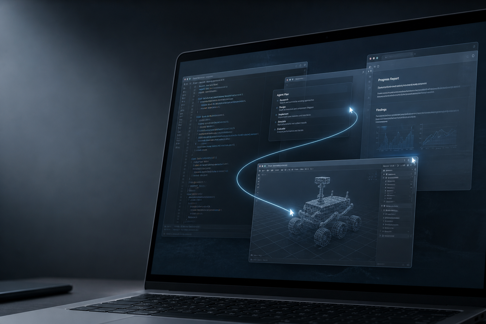
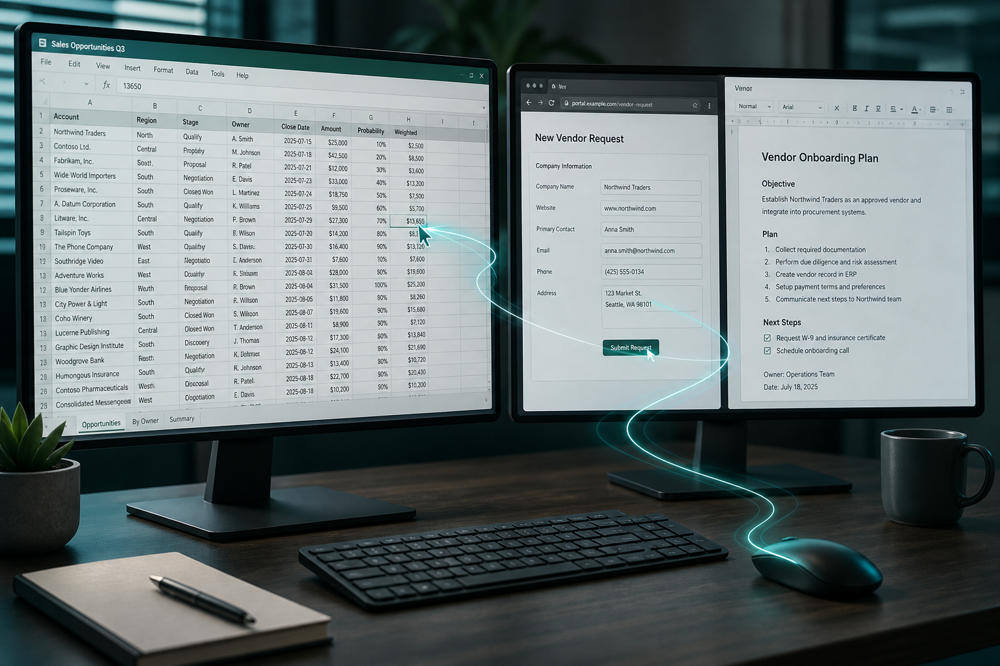
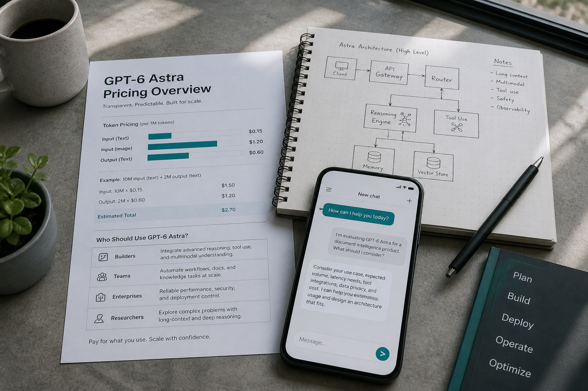

GPT-6 来了：OpenAI 说「欢迎来到 AGI 时代」，我们该信几分？
九月初，OpenAI 把那款传闻了整个八月的模型正式推到台前：
GPT-6 Astra。
发布会上，联合创始人 Greg Brockman 收尾只用了一句很重的话：
「Welcome to the AGI era.」
欢迎来到 AGI 时代。
这句话足够刷屏。
但刷屏之后，真正值得追问的，其实只有三件事：
它到底强在哪？
「AGI 时代」是判断，还是口号？
普通人、开发者、公司，现在该怎么用？
01｜别再把它当成「更会聊天的 ChatGPT」
过去两年，大家习惯了这样用大模型：
问一句，答一句；
写一段代码，再改一轮；
让它给建议，人自己去点鼠标。
Astra 想改的，是这套交互本身。
OpenAI 把它定位成：目前最好的 computer use 模型——不是只会告诉你「下一步点哪里」，而是自己去操作软件、跨应用把事做完。
演示里很有象征意味：从八十年代那台只会画黄圈的电脑，切到今天——语音一声，黄圈变成火箭，再变成一整个 3D 小游戏；甚至还能顺手挂上 eBay。
听起来像广告片。但企业侧真正关心的，是更朴素的能力：
- 填表、改 CRM、整理日历
- 做网页调研，再落成文档或邮件
- 操作表格、跑分析、写演示稿
- 在工程软件里完成更长链路的任务

02｜数字很好看，但别只盯着分数
官方给出的成绩单确实扎眼，例如：
- ARC-AGI-3：98.6%
- FrontierMath Tier 4 v2：97.6%
- DeepSWE v1.1：74.1%
- OSWorld 2.0 离线子集：约 72.6%，单任务耗时比上代明显更短
还有一组更「产品向」的说法：复杂推理、编程、科研、文档创作、电脑操作，都被放到同一块「端到端硬活」里。
上下文窗口也来到约 105 万 tokens 量级，输出上限约 12.8 万 tokens。知识截止到 2026 年 4 月 30 日。
这些数字能说明一件事：Astra 不是小修小补，而是一次明显的能力跃迁。
但也有两个冷静提醒：
第一，基准分不等于真实工作流。 ARC 这类测试，模型和「外挂系统」（记忆、工具、编排）怎么配，结果可以差很多。企业更该看稳定性、可审计性、失败恢复。
第二，OpenAI 自己最贴近「经济价值」的 GDPval，这次并没有成为核心叙事。 如果口号是「AGI 时代」，大家自然会问：它在真实职业任务上，到底比上代强多少？
03｜「AGI 时代」该怎么听？
Brockman 自己也承认：大家对 AGI 的定义并不一样。OpenAI 创立时以为会有一个所有人都一眼认出的「那一天」；现实却更灰、更模糊。
他个人的态度很直接：「对我来说，我觉得我们已经到了。」
这句话适合做标题，不适合当结论。更贴近工作现场的听法，或许是：
- 如果 AGI 指「聊天更聪明」——这关早过了
- 如果 AGI 指「能在多数高价值工作上稳定替代专业人士」——证据还在积累
- 如果 AGI 指「人开始把复杂多步工作委托给系统，自己只做高层决策」——Astra 正在把这件事做成产品形态
对多数读者来说，第三种定义最有用。因为你不需要先说服自己「人类历史翻页了」，也能立刻感受到变化：
工具正在从回答问题，转向接管流程。
04｜贵不贵？谁现在就该上？

API 公开价大致是：
- 输入：$10 / 百万 tokens
- 缓存输入：$1 / 百万 tokens
- 输出：$50 / 百万 tokens
相对此前旗舰，贵一截。超长上下文（输入超过约 27.2 万 tokens）还会触发更高费率；还有 Fast / Batch 等不同计费档。
访问上，是分批放开：企业受信通道先行，再逐步覆盖 ChatGPT 付费档与 API。以你账号里实际可选模型为准。
适合尽快试的人
- 工作里大量「跨网页 + 表格 + 文档」的脏活
- 已有明确的 agent / computer use 场景
- 能接受更高单价，换更少人工串流程
可以再等等的人
- 主要需求仍是写作、总结、轻量问答
- 对成本敏感，且现有模型已经够用
- 还没想清楚失败时谁负责、日志怎么留
05｜写给做内容、做产品、做管理的人
如果只看热闹，「OpenAI 又发大模型了」就够了。如果看趋势，有三件事更值得记下：
1. 交互范式在变
以后比拼的不只是谁答得漂亮，而是谁更能在真实软件里把任务闭环。
2. 组织方式会变
员工从「自己操作软件」，更多变成「设定目标、审核结果、处理例外」。
3. 信任与治理会更重要
越是能自己点鼠标的系统，越需要权限边界、操作回放、人工确认点。
这也是为什么，我对「欢迎来到 AGI 时代」这句话的态度是：
可以认真听，但请带着产品经理的眼睛听。
它宣布的不是神话完结，而是：
自动化的主战场，已经从对话框，挪到了桌面与浏览器里。
结尾｜先别急着站队
GPT-6 Astra 值得兴奋。它把「agent 能干活」这件事，推到了一个更接近日常办公的位置。
但它还没到可以不问代价、不问边界、不问失败率就全盘托付的程度。
更聪明的姿势，或许是：选一个真实、重复、可验收的工作流，让它跑一周，用结果说话。
分数会过时，口号会褪色。能不能稳定把活干完，才是下一阶段真正的评测。
如果你也在试 Astra，欢迎把你的真实场景留在评论区。我们下期继续拆：哪些工作流最先值得交给 computer use。